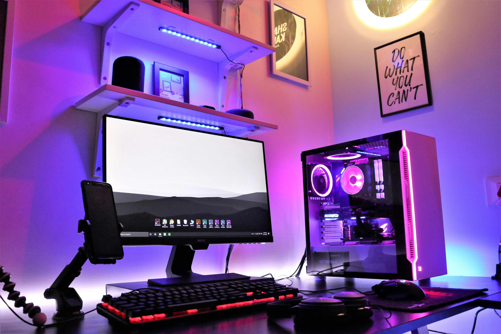

A Bit More About Me

Software Development and AI
I love exploring how AI can assist and inspire creative software development. Love building hobby projects just for fun.

Gaming
Weekends are gaming and dining day for me. Love playing Factorio and CS2.
Trams
I always find the tram in any new city - nothing beats exploring a city on a tram with a coffee to sip.

Reading
I collect books faster than I can read them - always learning something new.
Hiking
Hiking clears my head after few months of intense coding.
Music & Films
Soundtracks make the best debugging playlists - films keep my imagination alive.

What I do
Hello there! I’m a passionate software developer currently pursuing a BSc in Computer Science at the University of Salford. I have several years of hands-on experience in web development and am now exploring software security, REST APIs, AI, and data mining. I enjoy building clean, user-friendly interfaces, learning emerging technologies, and contributing to meaningful projects. Currently, I’m leading a team of five peers in developing software for a real client as part of the Salford Agile Hack Camp. Previously, I served as a Team Leader in my workplace and now work part-time as a team member.
Before starting university, I taught myself Bootstrap, JavaScript, CSS, HTML, Photoshop, and logo design - everything needed for front-end development. I take great pride in creating interactive websites with a unique, creative touch. Right now, I’m developing a full-stack web application called Pet Watch, which integrates MySQL for the database, PHP for the back end, Google Maps API for location services, and JavaScript for a dynamic front-end experience.
Beyond web development, I also work in Java-based software development. As part of a university project, I’m building a Java game and recently completed a console-based project titled Sputnik Vehicle Hire System. My goal is to expand it using JavaFX to deliver a cross-platform GUI application.
I’m currently seeking an industrial placement to gain real-world experience and contribute to
innovative,
impactful software solutions. Feel free to reach out if you’d like to collaborate or discuss potential
opportunities - I’d love to hear from you.
Thank you for taking the time to learn more about me.